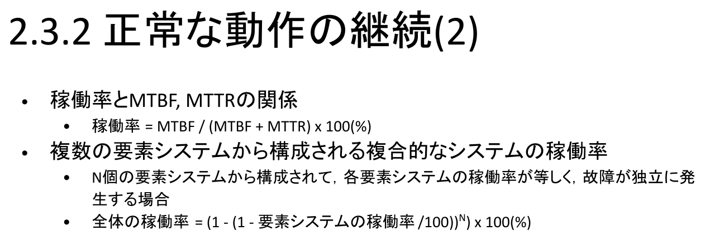

情報｜田中哲郎クラス講義ノート
このページは講義スライドの流れを節単位に組み直し、用語の関係と学習上の要点を説明する。構成要素・性能・信頼性・認証を中心に、定義だけでなく、なぜ必要か、どのように使うかまで確認する。
この章で身につけるべきなのは、機器や用語の名前を増やすことではない。日常には、LINE、鉄道の自動改札、有料道路の料金収受、携帯電話網、マイナンバー、UTOLなど、一見すると別々のサービスがある。これらを共通の言葉で分解し、どの構成要素が、どの情報を、どのような規則で受け渡し、利用者へどんな価値を返しているかを説明できるようになることが本章の目的である。
情報通信技術（ICT）を利用して、何らかの価値を提供するシステムを情報システムという。重要なのは「コンピュータがあること」ではなく、複数の機器、ソフトウェア、通信、人間の操作、運用規則が協調して価値を生むことである。単体のCPUは部品にすぎないが、改札機、ICカード、運賃データベース、通信網、駅員の運用を結びつければ、乗車資格を短時間で判定する情報システムになる。
したがって、情報システムの境界は目的に応じて変わる。Google Mapsを「スマートフォンのアプリ」とだけ見ることもできるが、経路検索を説明するには、端末、位置情報、地図データ、遠隔サーバ、ネットワークまで含めなければならない。障害対応を考えるなら、データセンター、電源、監視担当者、バックアップも境界の内側へ入る。何を説明したいかによってモデルの粒度を選ぶことが、情報システムを考える第一歩である。
画面を眺めているだけなら、Google Mapsは一つのアプリに見える。しかし地図を拡大・移動すると、端末は表示範囲に必要な地図片や施設情報をサーバへ要求し、応答を受け取って画面を書き換える。ChromeのデベロッパーツールでNetworkタブを開く演習は、通信技術の操作を覚えるためだけのものではない。滑らかな一画面の背後で、多数の独立した要求と応答が発生していることを可視化する演習である。
ここから、端末とサービスを同一視してはいけないことが分かる。端末には利用者の入力を受け取り結果を表示する役割があり、サーバには大量の地図・経路情報を保持し、要求に応じて計算結果を返す役割がある。通信が切れれば端末自体が正常でも最新データは取得できない。逆に、端末を交換しても同じアカウントやサービスを利用できるのは、主要なデータと処理が端末の外側にも存在するからである。
端末も一枚岩ではない。ハードウェアにはCPU、主記憶、カメラ、ディスプレイ、加速度センサー、GPS受信機などがある。OSはこれらを管理し、AndroidやiOSが代表例である。アプリはOSが提供する機能を利用して動く。Google Mapsが位置を取得するとき、アプリがGPS回路を直接好き勝手に操作するのではなく、OSの位置情報サービスを介する。この分離によって、アプリ開発者は機種ごとの細部をすべて扱わずに済み、OSは権限確認や資源配分を一元化できる。
複雑なシステムを理解するため、下位層の細部を一旦隠し、上位層から必要な機能だけを見ることを抽象化という。対象の重要な性質を残して簡略化した表現がモデルであり、まとまった機能を交換可能な単位へ分けるのがモジュール化である。これらは説明を簡単にするだけでなく、故障箇所の切り分け、部品交換、並行開発を可能にする。
サーバはサービスを提供するプログラム、またはそれを動かすコンピュータを指し、クライアントはサービスを要求する側を指す。役割の名称なので、「サーバは必ず一台の大きな箱」という理解は誤りである。大規模サービスでは、データセンター内の数千台以上を連携させても、利用者からは一つのサービスに見えることがある。負荷分散、複製、障害時の切替えは、この複数台構成を前提としている。
一方、P2P（peer-to-peer）型では各要素が対等な立場で連携する。ブロックチェーンが代表例で、中央の一台だけを信頼の根拠にせず、複数参加者が記録を共有する。ただし「中央がないから常に安全」「サーバがないから管理不要」という意味ではない。合意形成、更新規則、参加者の識別、性能など別の課題が生まれる。試験では名称を答えるだけでなく、役割が集中しているか、各要素が対等かを構成図から判断することが重要である。
券売機でボタンを押した直後に反応することはレスポンスタイムに関係し、一時間に何人を処理できるかはスループットに関係する。巨大な集計処理が途中経過をすぐ表示しても、完了まで長ければターンアラウンドタイムは長い。同じ「速い」という語でも利用場面によって重視する尺度が違うため、比較の前に目的を明示しなければならない。
ベンチマークは、共通のプログラムやデータを実行して性能を比較する仕組みである。しかし数値は「コンピュータの絶対的な速さ」ではなく、その課題に対する性能である。TOP500は連立一次方程式を解く計算性能、Graph500はグラフ探索性能を中心に測る。同じ機械でも得意な処理は異なるので、利用目的と無関係なベンチマーク順位だけで優劣を決めてはいけない。
情報システムでは、故障を完全にゼロにすることは現実的でない。そこで「故障するか」だけでなく、どれくらい長く正常動作し、故障後どれくらい早く復旧するかを測る。正常動作時間を全観測時間で割った割合が稼働率（可用性）である。
MTBFは平均故障間隔で、正常動作時間を故障回数で割る。MTTRは平均復旧時間で、復旧作業時間を故障回数で割る。スライド中の「MTRR」は表記上の誤りと考えられ、通常はMTTR（Mean Time To Repair）を用いる。同じ99%の稼働率でも、「長期間動いた後に一度だけ長時間停止するシステム」と「短い停止を頻繁に繰り返すシステム」では利用者への影響が違う。その違いを表すためにMTBFとMTTRを併記する。
MTBFが990時間、MTTRが10時間なら、稼働率は $990/(990+10)=0.99$、すなわち99%である。MTBFを変えずMTTRを1時間へ短縮すれば約99.899%になる。故障を起こりにくくする方法だけでなく、監視、自動切替え、交換手順の整備によって復旧を速くすることも可用性を上げる。
要素を並列化し、「少なくとも一つが動けば全体が動く」構成にすると、独立故障を仮定した全体稼働率は $1-(1-a)^N$ で求められる。要素稼働率$a=0.9$を二重化すれば、両方が同時に止まる確率は$0.1^2=0.01$なので全体は0.99となる。ただし、同じ電源、同じネットワーク、同じソフトウェア欠陥を共有すれば故障は独立でない。式を使う前に共通原因故障がないという仮定を確認する必要がある。

信頼性設計の用語は似ているが、狙いが異なる。試験では名称と説明の対応だけでなく、具体例がどの方針に当たるかを判断できるようにする。
これらは排他的な選択肢ではない。鉄道信号なら部品を厳しく検査してFault Avoidanceを行い、装置を二重化してFault Tolerant性を持たせ、それでも不整合があれば停止信号へ倒すFail Safeを採用できる。動画サービスなら画質を落として配信を続けるFail Softが適するかもしれない。守る対象と許容できる損失によって組合せが変わる。
「1株を61万円」で売るつもりが「1円で61万株」と入力され、巨額損失が生じた。単に操作者の注意不足と片づけるのではなく、異常な価格・数量の組合せを拒否する、損失見込みを表示して再確認する、取消しを確実に受理する、といったFool Proof設計を考えるべき事例である。人間は必ず誤るという前提に立つことが、情報システム設計では重要である。
攻撃名をばらばらに暗記すると、新しい事例へ対応できない。まず攻撃者が何を損なわせたいかを考える。DoSは大量要求でサービス提供能力を使い切らせ、主に可用性を損なう。ランサムウェアはデータを暗号化して利用不能にし、金銭を要求する。さらに情報を窃取して公開を脅す場合、機密性も同時に侵害する。SQL注入は入力欄などから意図しない命令をデータベースへ実行させ、本来読めない情報を取得・改変する。フィッシングは偽サイトや偽メッセージで利用者を誘導し、認証情報を渡させる。
次に侵入口を見る。ハードウェア・ソフトウェアの脆弱性を突く攻撃と、人間の判断を突く攻撃がある。テンペスト攻撃は機器から漏れる電磁波を傍受して情報を推定するため、通常のネットワーク通信だけを監視しても防げない。フィッシングは技術的に本物そっくりな画面を作り、人間に誤操作させる。更新を怠らず既知の脆弱性を塞ぐことは重要だが、それだけでは人間を狙う攻撃を防げない。
2024年のKADOKAWA、2025年のアサヒグループの事例が示すように、機能停止と情報窃取は同時に起こり得る。したがって、バックアップを取るだけでなく、バックアップ自体を攻撃から分離する、侵入を早期検知する、権限を必要最小限にする、事故時の連絡・復旧手順を準備する、といった多層防御が必要になる。
認証は、アクセスしている主体が主張どおりの人物・機器であるかを確かめる仕組みである。評価軸は安全性、利便性、秘匿性、交換可能性である。長く複雑なパスワードは推測に強くても、利用者が使い回したり紙へ書いたりすれば全体として弱くなる。指紋は入力が容易だが、漏洩しても指を交換できない。認証手段は「突破されにくさ」だけでなく、日常的に正しく使えるか、情報自体を秘密に保てるか、失効・再発行できるかで評価する。
多要素認証は、この異なる種類から二つ以上を組み合わせる。パスワードとSMSで届く端末確認は知識＋所有である。暗証番号を二回入力しても、どちらも知識要素なら多段階ではあっても多要素ではない。この区別は試験で狙われやすい。
複数要素を使う理由は、一つの事故で全要素が同時に破られにくくするためである。ただし、パスワード入力と確認コード入力を同じ偽サイトがリアルタイム中継する攻撃もある。多要素認証を導入した時点で安全性が完成するのではなく、通信相手の確認、端末の保護、復旧手続、通知、ログ監視まで含めて設計する必要がある。
第2章単独の語句問題より、具体的なシステムへ複数概念を適用させる問題が重要である。2021年度のワクチン予約サイトでは、アクセス集中による停止、認証、攻撃への対策を現実のシステムとして考える。2024年度の遠隔会議システムでは、ネットワーク中継、公開鍵認証、通信量、圧縮が一つの題材にまとめられた。つまり試験が見ているのは、定義を覚えたかではなく、目の前の構成図や障害事例のどこに概念が現れるかである。
MTBFが720時間、MTTRが8時間のサーバの稼働率を求めよ。また、同じサーバを二台並列化し、故障が独立で一台以上が動けばサービスを提供できる場合の稼働率を求めよ。
一台は $720/(720+8)\approx0.9890$、約98.90%。二台が同時停止する確率は $(1-0.9890)^2$ なので、全体は約99.988%。ただし実システムでは共通電源や共通ソフトウェアによる相関故障を検討する必要がある。
自動改札で通信障害が起きたとき、すべての扉を閉じる設計と、入場記録を端末へ一時保存して通過させる設計を比較せよ。
閉じる設計は誤課金や不正通過を避けるFail Safe寄りだが、避難や混雑の安全性を別途考える必要がある。一時保存は機能を限定して継続するFail Soft寄りで、後の同期、改ざん防止、保存容量が課題となる。唯一の正解ではなく、守る対象と障害時の損失を示して論じる。
パスワード、秘密の質問、指紋を順に確認する方式は多要素認証か。理由と、漏洩後の交換可能性を説明せよ。
パスワードと秘密の質問はともに知識要素、指紋は生体要素なので、全体としては二種類を用いる多要素認証である。ただし秘密の質問は推測・公開情報に弱く、指紋は漏洩後に交換しにくい。要素数だけでなく各要素の性質を評価する。
用語を単独で暗記するのでなく、題材のどこにその概念が現れ、どの条件を根拠に判断するかを説明できるようにする。
構成要素・性能・信頼性・認証は独立した暗記事項ではなく、情報を表現し、処理し、伝え、社会で安全に利用するための一連の考え方としてつながっている。各節の太字語を自分の言葉で説明できるか確認しよう。